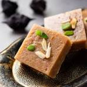

Gulab jamun
Ingredients
- sugar
- milk
- oil
Recipe
- Make the dough: Mix 1 cup khoya, 3 tbsp maida, and a pinch of baking soda, then knead into a soft dough using milk. Roll into smooth balls.
- Prepare sugar syrup: Boil 1.5 cups sugar with 1.5 cups water, add crushed cardamom and optional rose water/saffron, and simmer for 5-7 minutes.
- Fry the gulab jamun: Deep fry the dough balls in medium-hot oil or ghee until golden brown.
- Soak in syrup: Add the fried balls to warm sugar syrup and let them soak for 1-2 hours before serving.
Basundi
Ingredients
- sugar
- milk
- dryfruits
Recipe
- Take 1 liter of full-fat milk in a heavy-bottomed pan. Heat it on medium flame and bring it to a boil.
- Lower the flame and let the milk simmer. Stir occasionally to prevent burning and scrape the cream from the sides, mixing it back into the milk. Continue until the milk reduces to half its original volume.
- Add sugar, cardamom powder, and a pinch of saffron (optional) to the thickened milk. Stir well and cook for 5–10 minutes.
- Add chopped nuts like almonds and pistachios for a rich flavor. Let it cool down, then refrigerate and serve chilled. Enjoy your creamy and delicious Basundi! 😊

barfi
Ingredients
- sugar
- ghee
- milk power
Recipe
- Heat 2–3 tablespoons of ghee in a non-stick pan. Add 1 cup of milk powder and sauté on low heat for a few seconds.
- Add ½ cup of milk and ½ cup of sugar to the pan. Stir continuously on low heat until the mixture thickens and starts leaving the sides of the pan.
- Transfer the mixture onto a greased plate or parchment paper. Spread it evenly and press it down to shape it into a square or rectangle.
- et it cool completely, then cut into square or diamond-shaped pieces. Garnish with chopped nuts if desired, and enjoy! 😊

Bhakarvadi
Ingredients
- Maida
- coconut flavour powder
- oil
Recipe
- In a mixing bowl, combine 1 cup of all-purpose flour (maida), 2 tablespoons of oil, and a pinch of salt. Gradually add water and knead to form a smooth, soft dough. Cover it with a damp cloth and let it rest for 15-20 minutes.
- In a bowl, mix 2 tablespoons of dry grated coconut, 1 tablespoon of coriander powder, 1 tablespoon of chili powder, 1 tablespoon of sesame seeds, 1 teaspoon of fennel seeds, and salt to taste. Add 1 teaspoon of tamarind paste or sugar for a tangy or sweet touch (optional). Mix everything well.
- Roll the dough into a thin sheet. Spread a thin layer of the spice-coconut mixture evenly over the dough. Carefully roll the sheet into a tight log and seal the edges.
- Cut the roll into small pieces and deep-fry them in hot oil until golden and crisp. Drain on paper towels and serve warm. Enjoy your delicious bhakarwadi! 😊